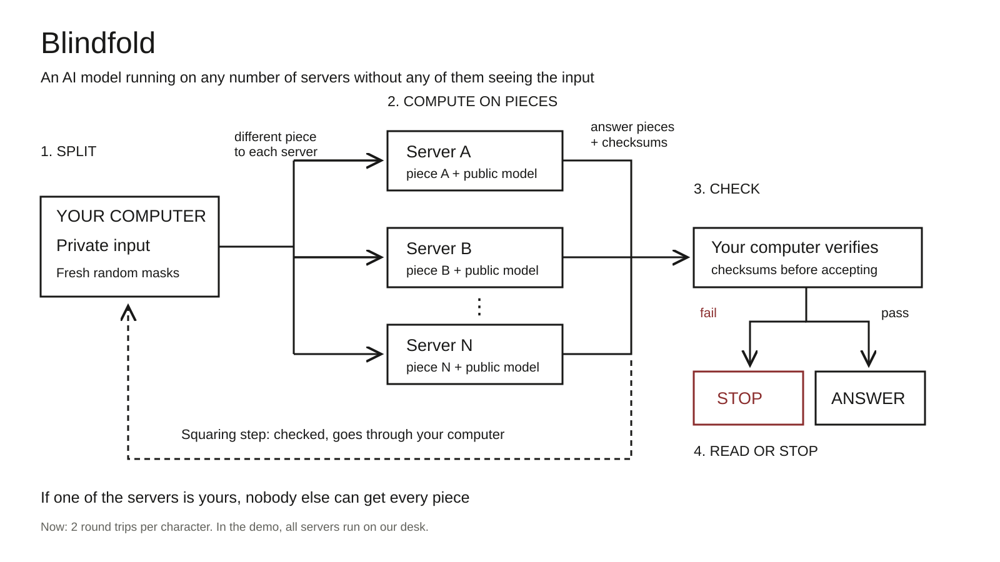

The whiteboard
Recording deskDraw the boxes and arrows, not every caption. This is the explanation you return to during the demo.

Draw it in this order
| Draw | Say |
|---|---|
| 1 / Your computer | “The note starts here. We split it into three random-looking pieces.” |
| 2 / A, B, C | “Each server gets a different piece and runs the same public model on it. No single server sees the note.” |
| 3 / Check | “The answer comes back in pieces, with checksums. Our computer checks them before accepting a character.” |
| 4 / Answer or stop | “A normal run matches the normal model. Now we tamper with one server and the check stops it.” |
| 5 / Bottom return arrow | “In this version, the squaring step also goes through our computer. That’s two round trips per character, not a finished peer-to-peer network.” |